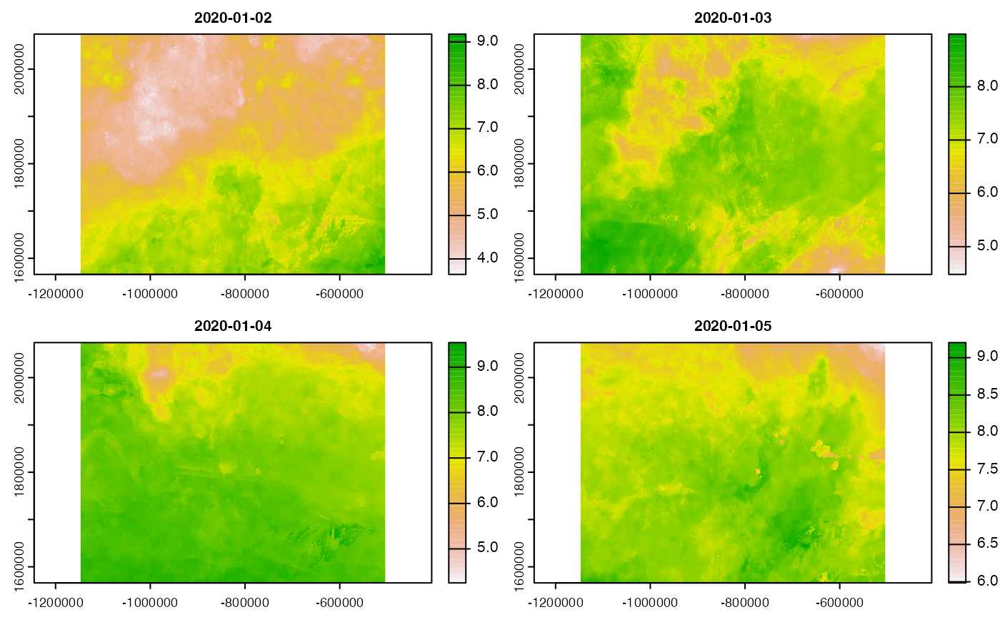
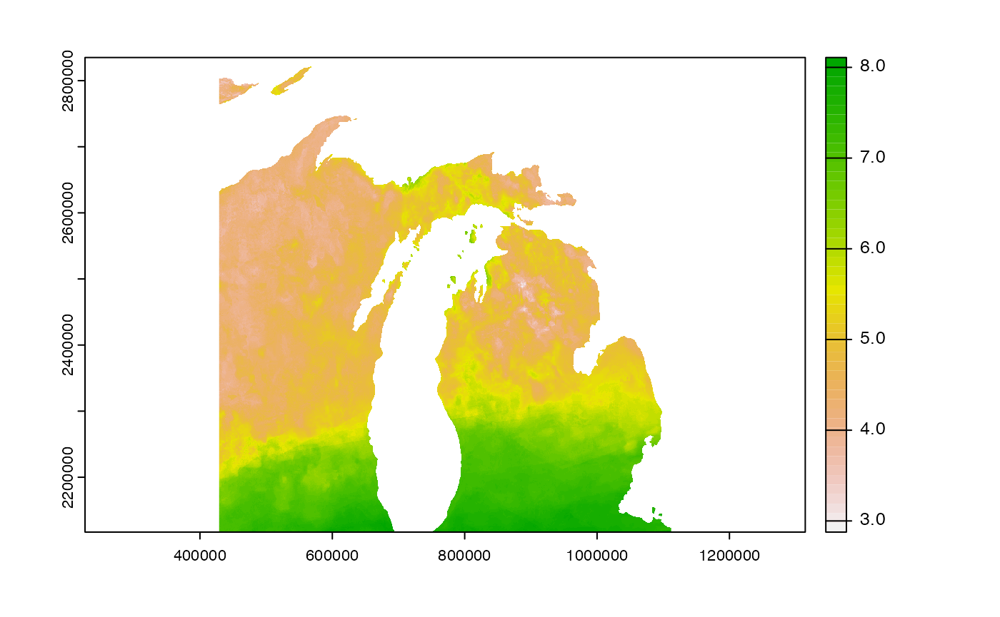
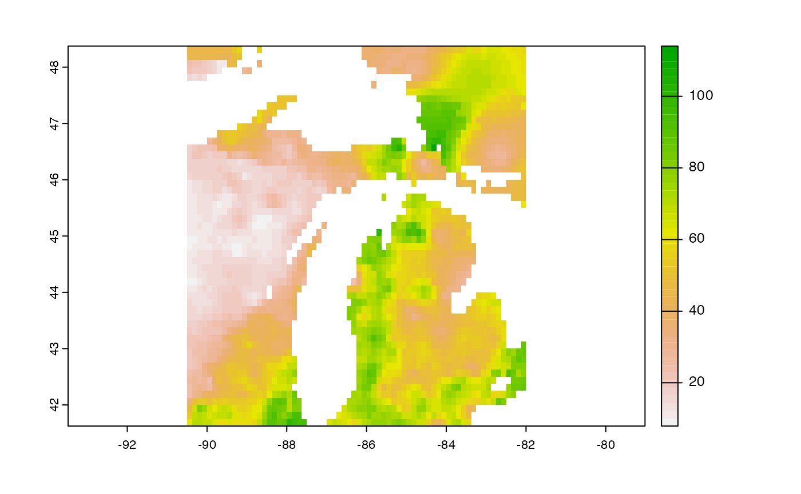

This Vignette focuses on the generalized R tooling for getting data from local and remote NetCDF(-esque) resources.
A lot of data lives online, and a lot lives on our computers. For the sake of demonstrating the utilities we focus on NetCDF data that is:
In principle, 1 and 3 behave the same with respect to access. So this vignette highlights working with a large local data set and an aggregated web-accessible remote data set.
The basic utilities demonstrated are:
dap_summary(): see whats in the datadap_crop(): identify the subset of the data you want for a space and timedap_get(): get the identified dataFor cases where its applicable, these three utilities are wrapped in a single function
In many cases the local files we have contain more data then needed for analysis. In this example lets look at a data set with daily, Continental USA Solar Radiation data:
url <- '/Users/mjohnson/Downloads/NEXGDM_srad_2020_v100.nc'
# Size of file?
utils:::format.object_size(file.size(url), "auto")
#> [1] "3.7 Gb"dap_summary() provides a convenient way to view the key details of resource, include the variables (units, and description), the X, Y, and T bounds, and the total number of values that would be extracted if the requested object was retrieved.
dap_summary(url = url)
#> source: /Users/mjohnson/Downloads/NEXGDM_srad_2020_v100.nc
#> varname(s):
#> > srad [MJ/day] (Shortwave radiation)
#> ==================================================
#> diminsions: -4800, -3150, 366 (names: x,y,time)
#> resolution: 1000, 1000, 1 days
#> extent: -2493045, 2306955, 3310005, 160005 (xmin, xmax, ymin, ymax)
#> crs: +proj=aea +lat_1=29.5 +lat_2=45.5 +x_0=0 +y_0=0 +u...
#> time: 2020-01-02 to 2021-01-01
#> ==================================================
#> values: 5,533,920,000 (vars*X*Y*T)In total the 3.7 GB file, contains 5,533,920,000 values. In most cases this is overkill for the task at hand. Say instead of the full spatial and temporal bounds we just wanted a subset? dap_crop() provides a lazy way to define and examine a subset before making the request.
dap_crop() allows you to define the spatial and temporal extent of the data you want, prior to extracting data, and returns a data.frame with the meta data regrading that subset. By default (verbose = TRUE), dap_crop() calls dap_summary() internally.
# Solar Radiation in January over Colorado
cropped <- dap_crop(URL = url,
AOI = AOI::aoi_get(state = "Colorado"),
startDate = "2020-01-01",
endDate = "2020-01-31")
#> source: /Users/mjohnson/Downloads/NEXGDM_srad_2020_v100.nc
#> varname(s):
#> > srad [MJ/day] (Shortwave radiation)
#> ==================================================
#> diminsions: 643, 508, 30 (names: x,y,time)
#> resolution: 1000, 1000, 1 days
#> extent: -1147045, -504045, 1566005, 2074005 (xmin, xmax, ymin, ymax)
#> crs: +proj=aea +lat_1=29.5 +lat_2=45.5 +x_0=0 +y_0=0 +u...
#> time: 2020-01-02 to 2020-01-31
#> ==================================================
#> values: 9,799,320 (vars*X*Y*T)The reported summary of the cropped object requires just .02% of the data from the entire resource:
dplyr::glimpse(cropped)
#> Rows: 1
#> Columns: 25
#> $ id <chr> "local"
#> $ varname <chr> "srad"
#> $ X_name <chr> "x"
#> $ Y_name <chr> "y"
#> $ T_name <chr> "time"
#> $ units <chr> "MJ/day"
#> $ long_name <chr> "Shortwave radiation"
#> $ URL <chr> "/Users/mjohnson/Downloads/NEXGDM_srad_2020_v100.nc?srad[0…
#> $ duration <chr> "2020-01-02/2021-01-01"
#> $ interval <chr> "1 days"
#> $ nT <int> 366
#> $ proj <chr> "+proj=aea +lat_1=29.5 +lat_2=45.5 +x_0=0 +y_0=0 +units=m …
#> $ X1 <dbl> -1146545
#> $ Xn <dbl> -504545
#> $ Y1 <dbl> 1566505
#> $ Yn <dbl> 2073505
#> $ resX <dbl> 1000
#> $ resY <dbl> 1000
#> $ ncols <dbl> 643
#> $ nrows <dbl> 508
#> $ toptobottom <lgl> FALSE
#> $ tiled <chr> ""
#> $ Tdim <dbl> 30
#> $ startDate <dttm> 2020-01-02
#> $ endDate <dttm> 2020-01-31Aside from the descriptive data, the most critical element is the URL which is a formed OpenDAP call for the AOI and time of interest.
cropped$URL
#> [1] "/Users/mjohnson/Downloads/NEXGDM_srad_2020_v100.nc?srad[0:1:29][1236:1:1743][1346:1:1988]"While these is URL/OpenDAP based calls intended for subsetting over http, and will not work directyl on a local file, there is an internal function within opendap.catalog that converts OpenDAP strides (e.g. [T][Y][X]) to RNetCDF start/count syntax for local resources:
dap_to_local(cropped[1,], get = FALSE) |>
glimpse()
#> Rows: 1
#> Columns: 5
#> $ file <chr> "/Users/mjohnson/Downloads/NEXGDM_srad_2020_v100.nc"
#> $ variable <chr> "srad"
#> $ start <I<list>> 1347, 12....
#> $ count <I<list>> 643, 508, 30
#> $ unpack <lgl> TRUENow with our ideal extent defined, we need to get the data!
dap_get()
dap_get() can bring the data defined in either a URL or a dap_crop() data.frame into R as a SpatRast object.
(srad = dap_get(cropped))
#> $srad
#> class : SpatRaster
#> dimensions : 508, 643, 30 (nrow, ncol, nlyr)
#> resolution : 1000, 1000 (x, y)
#> extent : -1147045, -504045, 1566005, 2074005 (xmin, xmax, ymin, ymax)
#> coord. ref. : +proj=aea +lat_0=23 +lon_0=-96 +lat_1=29.5 +lat_2=45.5 +x_0=0 +y_0=0 +ellps=WGS84 +units=m +no_defs
#> source : memory
#> names : 2020-01-02, 2020-01-03, 2020-01-04, 2020-01-05, 2020-01-06, 2020-01-07, ...
#> min values : 3.643555, 4.479492, 4.250977, 5.985352, 6.518555, 5.408203, ...
#> max values : 9.180664, 8.987305, 9.541016, 9.202148, 10.203125, 10.263672, ...
#> unit : MJ/day, MJ/day, MJ/day, MJ/day, MJ/day, MJ/day, ...
dap()
dap = dap(URL = url,
AOI = AOI::aoi_get(state = "MI"),
startDate = "2020-01-01")
#> source: /Users/mjohnson/Downloads/NEXGDM_srad_2020_v100.nc
#> varname(s):
#> > srad [MJ/day] (Shortwave radiation)
#> ==================================================
#> diminsions: 683, 718, 1 (names: x,y,time)
#> resolution: 1000, 1000, 1 days
#> extent: 428955, 1111955, 2117005, 2835005 (xmin, xmax, ymin, ymax)
#> crs: +proj=aea +lat_1=29.5 +lat_2=45.5 +x_0=0 +y_0=0 +u...
#> time: 2020-01-02 to 2020-01-02
#> ==================================================
#> values: 490,394 (vars*X*Y*T)
str(dap, max.level = 1)
#> List of 1
#> $ srad:Formal class 'SpatRaster' [package "terra"] with 1 slot
plot(rast(dap))
For this example, lets say you want the monthly observational data used for BCSD downscaling. We know this data sits on a THREDDS data server maintained by the USGS.
Following the above examples for local file we can use the same process. This time we find the web-resource contains more then one variable:
url <- "https://cida.usgs.gov/thredds/dodsC/bcsd_obs"
dap_summary(url = url)
#> source: https://cida.usgs.gov/thredds/dodsC/bcsd_obs
#> varname(s):
#> > pr [mm/m] (monthly_sum_pr)
#> > prate [mm/d] (monthly_avg_prate)
#> > tas [C] (monthly_avg_tas)
#> > tasmax [C] (monthly_avg_tasmax)
#> > tasmin [C] (monthly_avg_tasmin)
#> > wind [m/s] (monthly_avg_wind)
#> ==================================================
#> diminsions: 462, 222, 600 (names: longitude,latitude,time)
#> resolution: 0.125, 0.125, 1 months
#> extent: -124.75, -67, 25.12, 52.88 (xmin, xmax, ymin, ymax)
#> crs: +proj=longlat +a=6378137 +f=0.00335281066474748 +p...
#> time: 1950-01-31 to 1999-12-31
#> ==================================================
#> values: 369,230,400 (vars*X*Y*T)
cropped = dap_crop(url, AOI = AOI::aoi_get(state = "CA"), startDate = '1995-01-01')
#> source: https://cida.usgs.gov/thredds/dodsC/bcsd_obs
#> varname(s):
#> > pr [mm/m] (monthly_sum_pr)
#> > prate [mm/d] (monthly_avg_prate)
#> > tas [C] (monthly_avg_tas)
#> > tasmax [C] (monthly_avg_tasmax)
#> > tasmin [C] (monthly_avg_tasmin)
#> > wind [m/s] (monthly_avg_wind)
#> ==================================================
#> diminsions: 83, 77, 1 (names: longitude,latitude,time)
#> resolution: 0.125, 0.125, 1 months
#> extent: -124.5, -114.12, 32.5, 42.12 (xmin, xmax, ymin, ymax)
#> crs: +proj=longlat +a=6378137 +f=0.00335281066474748 +p...
#> time: 1995-01-01 to 1995-01-01
#> ==================================================
#> values: 38,346 (vars*X*Y*T)
bcsd = dap_get(cropped)
str(bcsd, max.level = 1)
#> List of 6
#> $ pr :Formal class 'SpatRaster' [package "terra"] with 1 slot
#> $ prate :Formal class 'SpatRaster' [package "terra"] with 1 slot
#> $ tas :Formal class 'SpatRaster' [package "terra"] with 1 slot
#> $ tasmax:Formal class 'SpatRaster' [package "terra"] with 1 slot
#> $ tasmin:Formal class 'SpatRaster' [package "terra"] with 1 slot
#> $ wind :Formal class 'SpatRaster' [package "terra"] with 1 slot
(dap_get(cropped[1,]))
#> $pr
#> class : SpatRaster
#> dimensions : 77, 83, 1 (nrow, ncol, nlyr)
#> resolution : 0.125, 0.125 (x, y)
#> extent : -124.5, -114.125, 32.5, 42.125 (xmin, xmax, ymin, ymax)
#> coord. ref. : +proj=longlat +ellps=WGS84 +no_defs
#> source : memory
#> name : 1995-01-01
#> min value : 1.51
#> max value : 1545.87
#> unit : mm/m
cropped_wind = dap_crop(url, AOI, startDate = '1995-01-01', varname = 'wind')
#> source: https://cida.usgs.gov/thredds/dodsC/bcsd_obs
#> varname(s):
#> > wind [m/s] (monthly_avg_wind)
#> ==================================================
#> diminsions: 462, 222, 1 (names: longitude,latitude,time)
#> resolution: 0.125, 0.125, 1 months
#> extent: -124.75, -67, 25.12, 52.88 (xmin, xmax, ymin, ymax)
#> crs: +proj=longlat +a=6378137 +f=0.00335281066474748 +p...
#> time: 1995-01-01 to 1995-01-01
#> ==================================================
#> values: 102,564 (vars*X*Y*T)
cropped_wind2 = dap_crop(url, AOI, startDate = '1995-01-01', varname = 'wind', verbose = FALSE)
dap = dap(URL = "https://cida.usgs.gov/thredds/dodsC/bcsd_obs",
AOI = AOI::aoi_get(state = "MI"),
startDate = "1995-01-01")
#> source: https://cida.usgs.gov/thredds/dodsC/bcsd_obs
#> varname(s):
#> > pr [mm/m] (monthly_sum_pr)
#> > prate [mm/d] (monthly_avg_prate)
#> > tas [C] (monthly_avg_tas)
#> > tasmax [C] (monthly_avg_tasmax)
#> > tasmin [C] (monthly_avg_tasmin)
#> > wind [m/s] (monthly_avg_wind)
#> ==================================================
#> diminsions: 68, 54, 1 (names: longitude,latitude,time)
#> resolution: 0.125, 0.125, 1 months
#> extent: -90.5, -82, 41.62, 48.38 (xmin, xmax, ymin, ymax)
#> crs: +proj=longlat +a=6378137 +f=0.00335281066474748 +p...
#> time: 1995-01-01 to 1995-01-01
#> ==================================================
#> values: 22,032 (vars*X*Y*T)
str(dap, max.level = 1)
#> List of 6
#> $ pr :Formal class 'SpatRaster' [package "terra"] with 1 slot
#> $ prate :Formal class 'SpatRaster' [package "terra"] with 1 slot
#> $ tas :Formal class 'SpatRaster' [package "terra"] with 1 slot
#> $ tasmax:Formal class 'SpatRaster' [package "terra"] with 1 slot
#> $ tasmin:Formal class 'SpatRaster' [package "terra"] with 1 slot
#> $ wind :Formal class 'SpatRaster' [package "terra"] with 1 slot
dap = dap(URL = "https://cida.usgs.gov/thredds/dodsC/bcsd_obs",
AOI = AOI::aoi_get(state = "MI"),
startDate = "1995-01-01",
verbose = FALSE,
varname = "pr")
str(dap, max.level = 1)
#> List of 1
#> $ pr:Formal class 'SpatRaster' [package "terra"] with 1 slot